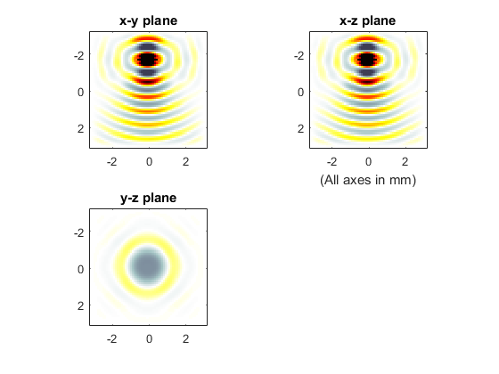

Simulations In Three Dimensions Example
This example provides a simple demonstration of using k-Wave for the simulation and detection of a time varying pressure source within a three-dimensional heterogeneous propagation medium. It builds on the Monopole Point Source In A Homogeneous Propagation Medium Example and Simulations In Three Dimensions examples.
Contents
Defining the time varying pressure source
As in one and two dimensions, a time varying pressure source is defined by assigning a binary matrix (i.e., a matrix of 1's and 0's with the same dimensions as the computational grid) to source.p_mask, where the 1's represent the grid points that form part of the source. The time varying input signal is then assigned to source.p. This can have any number of time points (it doesn't need to match kgrid.Nt) and can be defined as either a single time series (in which case it is applied to all of the source points), or a matrix of time series following the source points using MATLAB's standard column-wise linear matrix index ordering. Here a sinusoidal input is assigned to a square source element. To remove frequencies not supported by the spatial grid, the input should first be filtered using filterTimeSeries (see the Filtering A Delta Function Input Signal Example for more information).
% define a square source element source_radius = 5; % [grid points] source.p_mask = zeros(Nx, Ny, Nz); source.p_mask(Nx/4, Ny/2 - source_radius:Ny/2 + source_radius, Nz/2 - source_radius:Nz/2 + source_radius) = 1; % define a time varying sinusoidal source source_freq = 2e6; % [Hz] source_mag = 1; % [Pa] source.p = source_mag * sin(2 * pi * source_freq * kgrid.t_array); % smooth the source source.p = filterTimeSeries(kgrid, medium, source.p);
A plot of the source and sensor masks using voxelPlot is shown below.
Running the simulation
To allow visualisation of the source elements within the grid, the source mask is assigned to the optional input parameter 'DisplayMask'. This mask is overlaid onto the plot during the simulation. The optional input 'DataCast' is also set to 'single' to reduce the computation time.
% input arguments input_args = {'DisplayMask', source.p_mask, 'DataCast', 'single'}; % run the simulation sensor_data = kspaceFirstOrder3D(kgrid, medium, source, sensor, input_args{:});
A plot of the display during simulation is shown below.
An animated slice-by-slice visualisation of the final pressure field can be viewed using flyThrough.
% view final pressure field slice by slice
flyThrough(p_final);